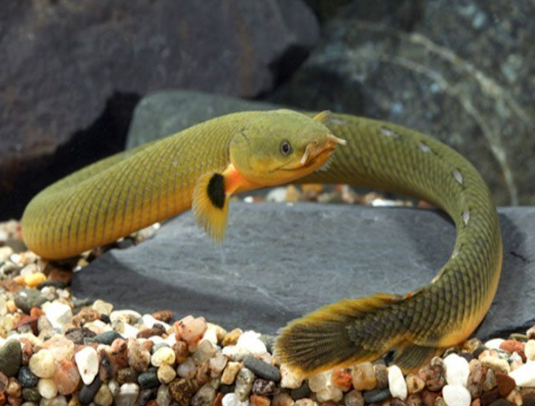

Systématique
- Ordre : Polypteriformes
- Famille : Polypteridae
- Genre : Erpetoichthys
- Espèce : E. calabaricus
- Auteur : Smith, 1865

Erpetoichthys calabaricus, souvent appelé "Poisson-corde" ou "Poisson-serpent", est un poisson archaïque appartenant à la famille des Polypteridae. Unique membre de son genre, il se distingue des membres du genre Polypterus par son corps extrêmement allongé et serpentiforme, ainsi que par l'absence totale de nageoires pelviennes.
Il peut atteindre une taille de 35 à 45 cm en aquarium, bien que des spécimens sauvages puissent dépasser les 60 cm. Son corps est recouvert d'écailles ganoïdes très dures (en forme de losanges). La coloration est généralement beige, ocre ou vert olive sur le dos, avec un ventre jaune vif. La nageoire dorsale est composée d'une série de petites pinnules (épines) indépendantes.
Erpetoichthys calabaricus est un prédateur nocturne au tempérament paisible envers les poissons qu'il ne peut pas avaler. Il possède une vue médiocre et s'appuie principalement sur son odorat très développé (narines tubulaires) pour localiser sa nourriture. C'est un poisson social qui apprécie la compagnie de ses congénères.
Il possède des poumons primitifs lui permettant de respirer l'air atmosphérique à la surface. Un accès à l'air libre est vital pour sa survie. C'est l'un des poissons les plus habiles pour s'échapper d'un aquarium : il peut se faufiler par le moindre trou de passage de tuyau. Le bac doit être hermétiquement fermé. Il apprécie les décors riches en cachettes, tubes et racines où il peut s'enrouler durant la journée.
Mode : Ovipare, pondeur sur substrat ou végétation.
La reproduction en captivité est extrêmement rare et peu documentée. Dans la nature, elle a lieu pendant la saison des pluies dans les zones inondées. La parade nuptiale implique que le mâle s'enroule autour de la femelle. Les œufs sont adhésifs et déposés parmi les plantes ou les racines flottantes.
Les alevins possèdent des branchies externes plumeuses très visibles, semblables à celles des larves de tritons, qui disparaissent lors de la croissance. L'élevage des jeunes est complexe car ils nécessitent une nourriture vivante microscopique très spécifique et une qualité d'eau irréprochable.
Dimorphisme sexuel : Difficile à établir sur des spécimens immatures. Chez l'adulte, la nageoire anale du mâle est plus large, plus épaisse et comporte plus de rayons (généralement 12 à 14) que celle de la femelle (environ 9 rayons), car elle est utilisée pour recueillir les œufs lors de la ponte.
Espérance de vie : 15 à 20 ans en aquarium, voire davantage si les conditions de maintenance sont respectées.
Originaire d'Afrique de l'Ouest et Centrale, du Nigeria au bassin du fleuve Congo. Il fréquente les eaux stagnantes ou à courant très lent, les zones marécageuses et les estuaires. Il tolère les eaux légèrement saumâtres.
Son habitat naturel est riche en végétation dense, racines et débris organiques. Les eaux y sont souvent peu profondes et peu oxygénées, un milieu où sa capacité à respirer l'air atmosphérique lui donne un avantage évolutif majeur.
Répartition

Origine naturelle :
- Afrique de l'Ouest : Nigeria, Cameroun, Guinée équatoriale, Bénin.
- Afrique Centrale : République du Congo, République démocratique du Congo, Angola.
- Localité type : Vieux Calabar, Nigeria.
Statut UICN : Préoccupation mineure (LC). L'espèce est commune mais ses habitats humides sont menacés par l'agriculture et la déforestation.
Paramètres de maintenance
Température : 24 à 28 °C.
pH : 6,5 à 7,5.
GH : 5 à 15 °dGH.
Courant : Faible.
Volume conseillé : Minimum 250-300 L pour un groupe, avec une grande surface au sol (bac de 120-150 cm de façade minimum).
Régime alimentaire
Régime : Carnivore (insectivore et piscivore).
Dans la nature, il consomme des vers, des crustacés, des insectes et de petits poissons.
En aquarium, il accepte les nourritures congelées (vers de vase, artémias, mysis, morceaux de crevettes ou de poisson blanc). Certains spécimens s'habituent aux granulés coulants pour carnivores. Il doit être nourri le soir car il est plus actif à l'extinction des feux.